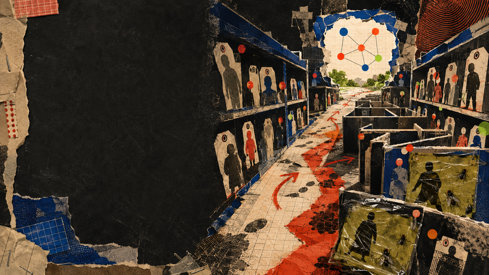
荷事生非 · 2026.09.06
來一場關於
社群平台的
密室逃脫
我們早已住進平台。今天練習辨認門鎖、找回鑰匙，還有決定要和誰一起出去。
黃豆泥 mashbean · 新創無界 NEXT.X
「看來我們已經有了答案：繼續掛在平台上。」
Geert Lovink，《困在社群平台》，第 2 頁
NT$ 0使用者特價
這是一場概念上的密室逃脫。房間裡沒有機關師，只有我們每天打開的
App、逐漸消失的朋友名單、說不清楚的推薦，以及一張從來沒有拿到手的合約。
我會從洛文克的《困在社群平台》出發，也會把自己從網友、使用者、平台工作者到密碼龐克實驗者的經驗放進來。四十分鐘先盤點門鎖，再拿真實案例試鑰匙。
請出示刷卡明細、載具或發票。
都沒有的話，平台沒有把服務賣給你。平台把你的時間、關係、偏好與可預測行為包裝成另一種商品。
「你怎麼會覺得自己是消費者呢？有提供刷卡還是載具嗎？」
黃豆泥，活動序文
「使用者是商品」已經說了很多年，說久了容易變成空話。我想把它改造成一個很具體的入場檢查。若你付了錢，可以要求帳目、退貨與契約。免費服務裡的權利關係完全不同。
我們交出去的資料彼此相連。平台得到人與人之間的關係，也取得讓這些關係繼續運轉的控制面板。
點一張卡，把它暫時從房間裡拿走。
平台保存的同時，也取得了刪除、降權、改價與改規則的能力。
「平台退出」之所以困難，是因為朋友、記憶、收入與治理全住在同一個地址。
黃豆泥，活動設計筆記
這頁請現場一起回答。困住人的力量常常住在手機以外。朋友名單、社團分工、共同記憶與收入都住在同一個地方。刪除
App 很容易，搬走一個共同體很難。
平台退出問題因此具有集體行動的結構。每個人單獨離開都會失去其他人，而所有人一起遷移又需要協調成本。
本關任務 翻出一張能把整個社群帶走的卡
四張卡都能派上用場，只有一張會帶動整個共同體。
「一切都始於消除孤立，對集體技能、能力和關係進行盤點。」
《困在社群平台》，第 14 頁
關機可以休息，斷網可以演練，代際提醒偶爾也有用。今天追的線索位在公共討論、社群治理與收入分配之間，個人退出只會空出一個位置。
演練的對象是四種能力。資料搬得走，關係接得回來，規則能被共同理解與修改，最後還要有資源讓新空間活下去。
房間一 · 平台現實主義
大家好，我也長期困在網路
離開醫院以後，我沿著成癮現場走進系統裡。
- 早期網路社群與部落格文化
- 數位政府與公民科技
- Matters 平台營運與治理
- 聯邦宇宙、密碼龐克與金流實驗
「被征服的主體甚至沒有意識到自己被征服了。」
《困在社群平台》，第 6 頁
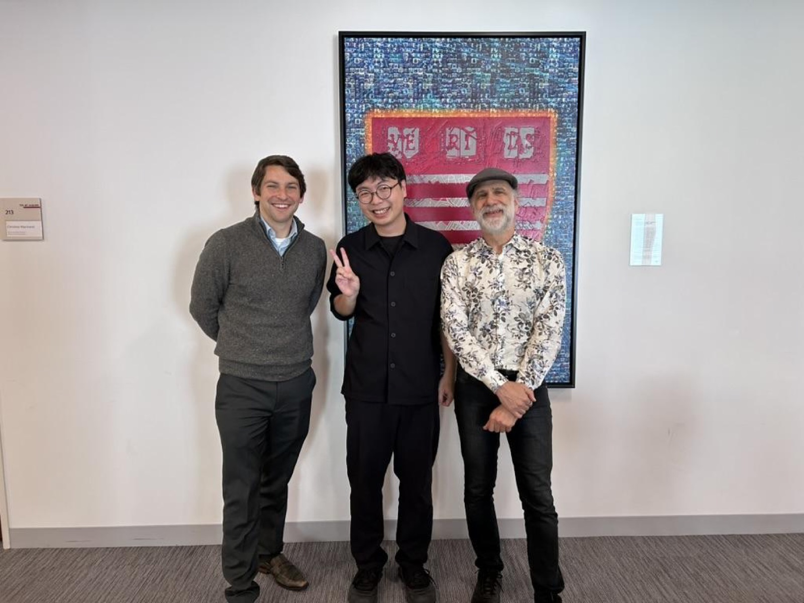
我站的位置一直在平台裡面。很早就沈迷
IRC、BBS、部落格，後來又進政府、進平台、進區塊鏈社群。這份經驗讓我對簡單答案一直保持懷疑。
照片裡是 Geert
Lovink。讀他的書時，對平台的控訴固然尖銳，「我們已經知道很多，卻仍然走不了」的困境更讓我有感。
網路網站郵件論壇RSSIRC部落格
平台
平台的成功
它替使用者藏起網路的複雜，也把所有關係改寫成自己的資料結構。
「平台本應公開辯論的事情，變成了既定事實。」
《困在社群平台》，第 52 頁
網路原本充滿協議、網站、入口與歧義。平台把這些東西包成一套順手介面。這份便利是真實的，不能靠懷舊取消。
代價也很清楚。當按鈕與資料結構都由同一家公司決定，網友能做什麼、關係能長成什麼樣子，就被壓縮在產品設計裡。
「在晚景淒涼的末日中爆滑一波，然後破防。」
黃豆泥，《困在社群平台》導讀
這三者共享同一座工廠。它把情緒密度換成停留時間，再把停留時間換成收入。
牛津年度詞彙把 Rage Bait、AI Slop 與 Parasocial
帶進了大眾討論。放在同一頁看，它們剛好構成平台的內容、情緒與關係三角。
內容可以大量生產，憤怒可以迅速分發，親密感則讓大家持續回來。使用者感覺自己在看世界，平台看到的是可穩定運轉的供應鏈。
每一代都有自己的籠子
每個世代都練會一套上網方法，也把一部分生活留在房東手裡
點開一張平台卡。介面一路換新，我們學會的動作也在改變。帳號可以重開，彼此重新相認、整理共同記憶、接續管理與收入，才是昂貴的搬家工程。
每次搬家都要清點四件行李
關係 誰還找得到誰記憶 舊內容能否繼續讀規則 誰能管理與申訴生計 做事的人如何獲得報酬
每個世代都有屬於自己的平台，但都困住了。
「為什麼一代又一代人都信奉自由主義的創業邏輯，卻從未想過要反抗剝削和監控的邏輯？」
《困在社群平台》，第 12 頁
Z
世代沈迷只是故事的一小段。每一代都在不同技術裡長出歸屬，也都付出退出成本。早期網路較常練習搬家，平台世代則把社交圖譜交給同一套產品。
「下一個平台」看起來像出口，歷史常常只是把同一批關係搬進另一間更漂亮的房間。
關係朋友、同事、讀者
→
互動讚、留言、轉發
→
指標觸及、留存、轉換
→
價格廣告、訂閱、估值
我們困住的地方，原本叫做社會生活。
「平台數據直接記錄了我們受到平台影響所表現出的行為。」
Angela Xiao Wu，引自《困在社群平台》，第 47 頁
平台需要衡量互動才能運作，社群也需要工具才能治理。當所有價值都被壓進單一指標，資源便會跟著指標重新分配。
社會生活因此帶上產品迭代的節奏。關係要更快，內容要更多，創作者要一直在線。
房間二 · 社群到底是什麼
社群會留下反覆完成事情的能力
人數、追蹤與流量描出外框。
辦活動、照顧新人、處理衝突、維護記憶，這些反覆發生的動作才讓人願意回來。
「一切都始於消除孤立，對集體技能、能力和關係進行盤點。」
《困在社群平台》，第 14 頁
社群常被平台化約成使用者數與互動率。換一個角度，它是一群人能否反覆完成某些事情。一起寫作、維護知識、照顧新人、處理衝突、募款或辦活動。
這些能力存在時，社群可以換工具。能力全都鎖在產品功能裡，平台還在，社群也可能慢慢消失。
網路曾經長得比較亂
Elixus 把組織方法留在網路史裡
網絡空間
網站、IRC、實體聚會、共同創作與開源工具交錯。每個入口都不完整，因此每個人都要學會連接。
「節點的密度讓人們建立真實的關係。」
《困在社群平台》，第 18 頁
Elixus
留下的線索來自跨媒介組織。網站是門面，聊天室負責即時對話，實體聚會建立信任，共同作品又把人帶回來。
當入口很多，維護較辛苦，權力也比較難集中在單一推薦演算法裡。
公共廣場的租約
Threads 同時像廣場、商場與新聞台
「我們在友善食光中高呼民主自由，然後被刪文。」
黃豆泥，《困在社群平台》導讀
Threads
的吸引力真實存在。很多人重新感到網路上有人說話，公共議題也找到新的流動方式。與此同時，政治內容的可見性、推薦節奏與帳號連動都由
Meta 決定。
公共領域如果住在商業產品裡，使用者擁有發言空間，卻沒有同等的制度權力。
請選一扇門
個人可以短暫離場，社交圖譜、治理規則與經濟依賴仍然需要搬遷方案。
「請分享集體退出的藝術。」
《困在社群平台》，第 50 頁
五個選項都有用途。刪 App 能休息，換平台能改善體驗，會員費可支持服務，區塊鏈和 AI
也能處理部分問題。它們單獨出現時，很容易把權力關係留在原地。
完整出口需要同時處理人、資料、規則與錢。少一項，搬家就會在半路停下。
房間三 · 走進平台機房
在 Matters，我從使用者走到營運現場
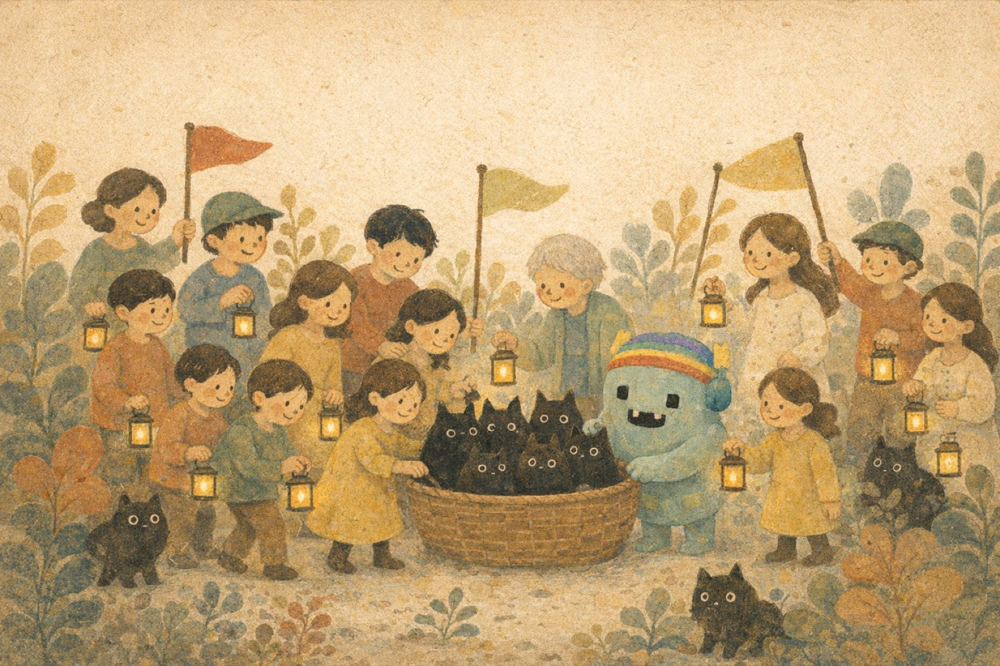
使用平台時看見內容與朋友。營運平台時，還會看見預算、濫用、客服、基礎建設與每天出現的新例外。
「聽起來很抽象，其實就是『演算法為什麼讓你看到這篇文？』」
黃豆泥，〈離職、回顧，與展望！〉
我在 Matters
經歷了角色轉換。作為使用者，我在意能否寫作、讀到好文章、遇到有趣的人。進入營運團隊後，每一個功能背後都連著成本與衝突。
平台治理從一道規則題變成立體現場。市場、技術、社群與制度同時運轉，每天還會冒出新的例外。
同一座城市的四張地圖
平台問題會在四個宇宙同時發生
只修一張地圖，問題會從另外三張繞回來。
「平台本身就具有政治性，是某種新的政治機構、政治戰場。」
《困在社群平台》，第 53 頁
這是我在 Matters
最常用的分析框架。市場要求可持續，產品決定互動形狀，社群形成實際規範，架構則決定資料和權限能否移動。
很多改革停在其中一格。開源沒有處理營運費，非營利沒有自動帶來社群治理，去中心化也可能保留投機市場。
→
→
→
→
同一把掃把，可能掃掉色情廣告，也可能掃掉求救訊息。
點開每一道門，看訊號如何變成判斷、處置與可復原的紀錄。
自動偵測會誤判，使用者檢舉會被濫用，同一段文字放在不同脈絡也可能完全不同。掃把每往前一步，權力也跟著移動。
治理在這裡長成一條程序。訊號、分類、處置、通知與申訴各自留下理由，社群才有機會檢視與修正。
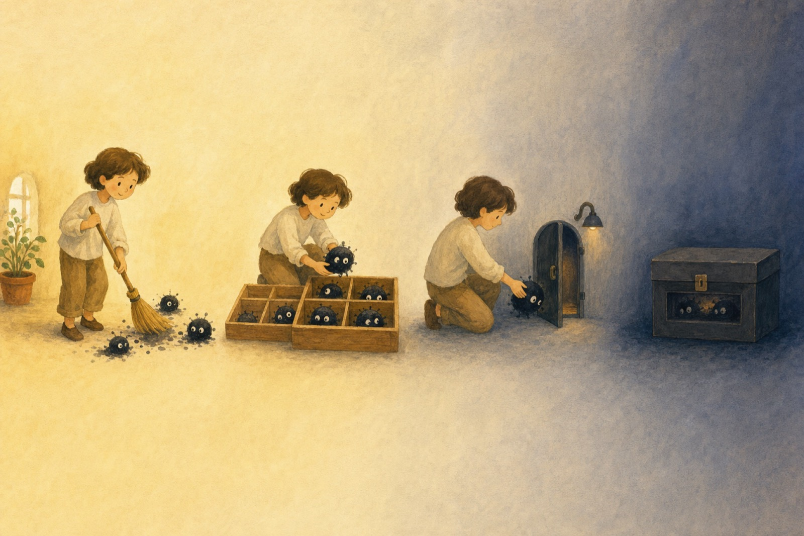
濫用行為是一條頻譜
共享清單與本地決策
清理後的公共空間
近 800 則社群下架垃圾內容一天十幾則 → 一週 0–2 則
「這就是社群集體的力量。」
黃豆泥，〈離職、回顧，與展望！〉
平台清道夫借用 DNS RPZ
的想像。社群可以共享可疑訊號，每個服務仍保留自己的政策與最終決定。這樣做把情報合作和治理權分開。
專案的目標很樸素。大量詐騙與垃圾不該壟斷人的注意力，正常內容應該有重新被看見的機會。
案件 339 · 權力濃度異常
一個人清了近九成，這算治理嗎
20+隊員339一週處置304由一人完成0申訴
高集中度本身是一張警報。這批內容能否處置，要沿著規則、證據、權限、申訴與稽核查一遍。
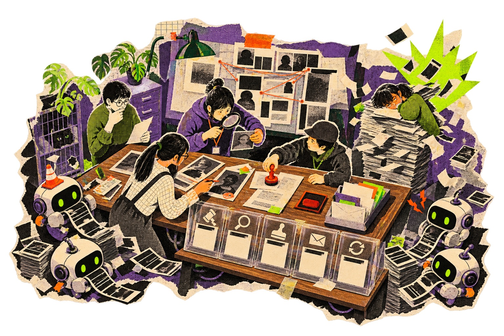
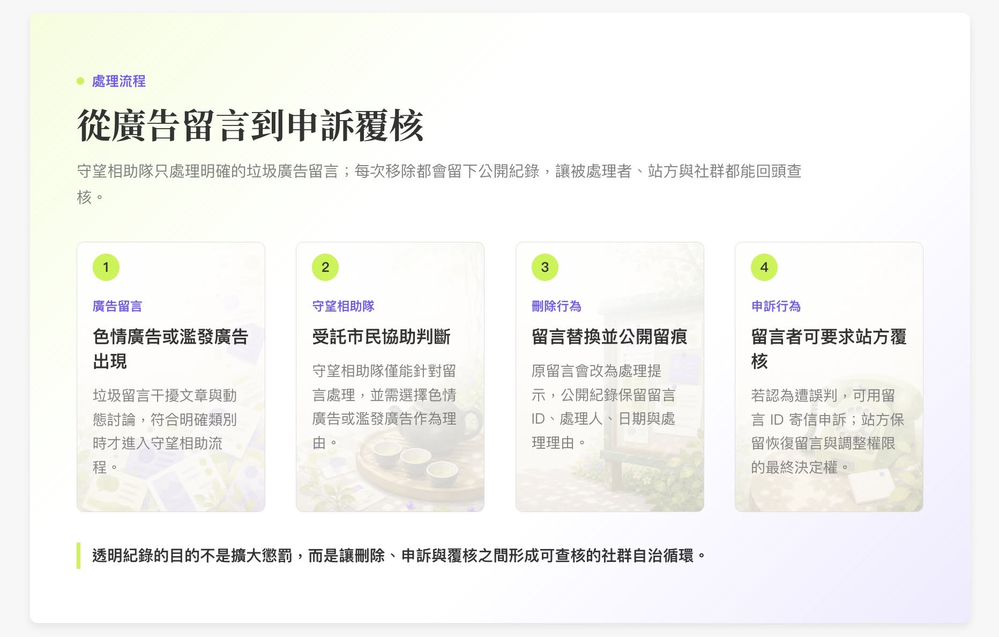
點亮五個檢查燈
先選一盞燈，看看這 304 次出手留下了什麼。
0 / 5 案件仍在黑箱
「所有的刪除程序都會被記錄下來，用來作為事後追溯的證據。」
黃豆泥，〈守望相助隊的打掃實驗〉
這個案例把治理從名詞變成判斷。二十多位隊員一週處理 339 則內容，其中一位處理 304
則；四個垃圾帳號又產生七成違規留言。
集中度高不會自動判定作惡。公開規則界定範圍，處置紀錄留下證據，權限限制損害，申訴可以復原，社群稽核則負責發現模式。五個答案連起來，治理才看得見。
非營利平台的生存題
股東退場以後，伺服器、人力與治理照常收費
點一個案例，查看非營利仍留下哪一把鎖。
每月照常寄到的帳單
伺服器安全客服內容治理產品開發
「善意本身無法轉換為永續。」
〈非營利的社群平台能活下去嗎？〉
非營利可以移除一部分股東回報壓力，伺服器、人力、安全與客服依然收費。Wikipedia
的捐款模型非常強，也很難直接複製。
收入來源會改變平台聽見的聲音。多元收入通常比單一救世主耐久，治理還要持續檢查使命有沒有跟著金主移動。
去中心化降低單點控制，營運、治理與資源問題依然每天報到。
「去中心化這種作法本身並不是萬靈丹。」
《困在社群平台》，第 75 頁
這座墓園保存失敗的維修紀錄。每一個停止、併購與轉型的案例都在提醒，技術協議只是生存條件之一。
使用體驗、開發者生態、資金週期與社群治理都會決定產品能否留下。去中心化最珍貴的地方，是服務關閉時，資料與關係還有沒有下一條路。
「我們需要的不是新的批評，而是新的地圖學。不是帝國的地圖學，而是逃離帝國的路線。」
《困在社群平台》，第 69 頁
共同出口
可搬、可管、可活
從這一頁開始進入工具桌。五把鑰匙分別處理技術互通、集體組織、規則權力、資源續命與高壓環境下的可用性。
鑰匙沒有固定順序。不同社群會從不同位置開始，最後把五條路接在一起。協議需要人組織，社群需要資源，金流也需要治理。
鑰匙 01 · 協議
聯邦宇宙替搬家保留鄰居的地址
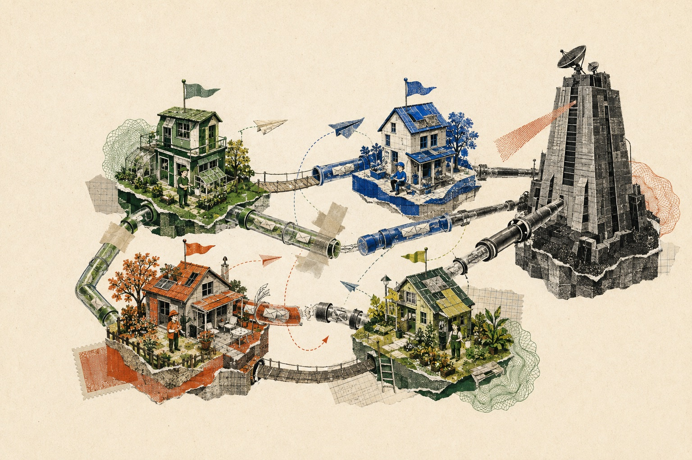
✦
不同房東，各自訂規則，訊息仍能跨站流動。
先選一個機關，看看協議解開哪一部分。
「節點之間的連接使他們能夠快速分享知識。」
《困在社群平台》，第 18 頁
聯邦宇宙很像電子郵件。不同服務商可以互寄，使用者不必全部住在同一家公司。這讓社群有選擇房東、自己架站或遷移的可能。
每個節點仍需要管理、金錢與信任。互通先打開「所有人得住在同一平台」這把鎖，其他鑰匙接著上場。
共同問題我們要解決什麼
→
成員邊界誰能加入與代表
→
分工承諾誰做什麼
→
工具組合聊天室、論壇、金庫、網站
開群組只要一秒，結社還要回答誰承諾、誰負責、誰能代表。
「我們建議從『弱連結』轉向『強連結』，跟小型專門的線上團體共事。」
《困在社群平台》，第 29 頁
群組只要一個按鈕，數位結社還需要共同問題、成員邊界、分工與承諾。這些答案會把一群帳號變成能採取行動的組織。
組織先成形，工具隨後進場。聊天室、論壇、雲端文件、網站與金庫可以混用；任何一個工具退出，社群還保有重新連接的能力。
鑰匙 03 · 可問責治理
管理員離線七天，社群照常開門嗎
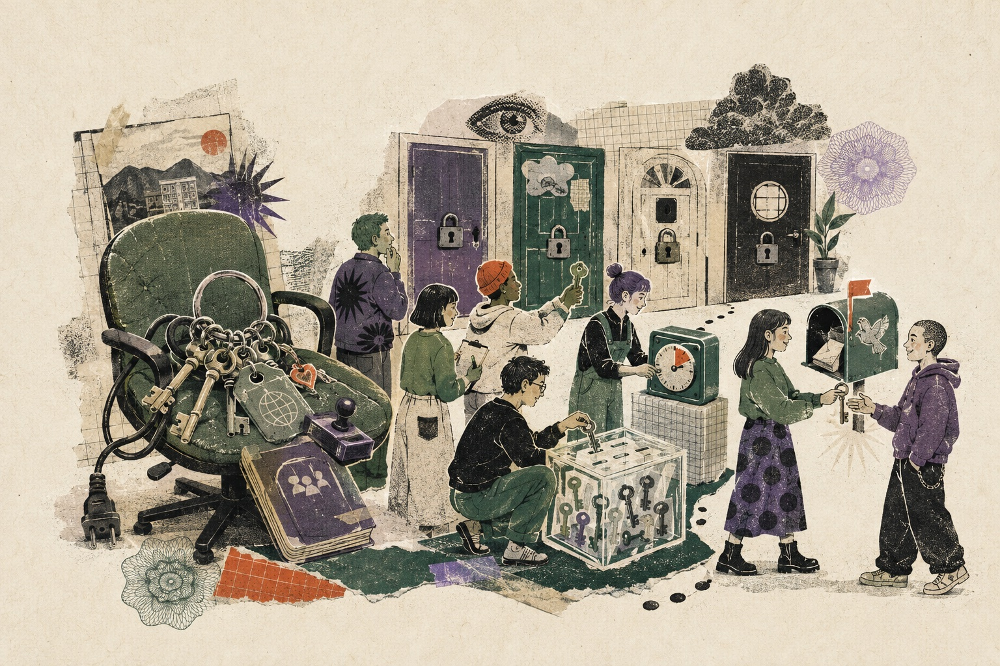
單點故障 密碼、網域、金庫、刪文權都在同一串鑰匙上
任務 讓四扇門在第八天仍然能開
點一扇門，放入公開紀錄、期限或替補角色。
0 / 4 社群停在門外
「『自決』並非你可以免費下載和安裝的東西。……自決是一種行動，是一個政治事件，最重要的是，它不是一個軟體功能。」
《困在社群平台》，第 19 頁
很多社群靠幾位可信任的管理員撐起來。這一頁把抽象制度換成停機測試。那個人休假、生病或離職七天，規則、處置、申訴與金鑰能不能繼續運作？
Matters
守望相助隊先給志工隱藏垃圾留言的有限權限，所有動作進公開布告欄，也保留申訴與復原。制度從一個可追蹤的高風險動作開始長大。
鑰匙 04 · 金流自由
社群金庫要看見錢從哪裡來、往哪裡去
支付商凍結帳戶 48 小時，哪條收入還能接上？
點擊收入來源，把它接進社群金庫。來源越多，單一中介越難讓整個社群斷炊；分配規則仍要公開可查。
金庫演練單
01誰支付02誰決定03誰查帳
0 / 2 再接兩條收入，解除單點斷炊
「我的工作是讓做事的人，獲得合理的報酬。」
黃豆泥，〈去中心化的邊陲之地〉
平台分潤很方便，也會把創作者收入綁在流量與政策上。世界各地的媒體正在測試會員、打包訂閱、議價、授權、公共資助與小額支付。
金流自由包含選擇收款管道、看懂分配規則，以及在中介封鎖或改價時切換替代路徑。加密貨幣只是選項之一。
壓力測試網域遭封鎖 · 帳號被停權 · 支付中斷
韌性來自替代路徑的數量，也來自大家是否知道怎麼切換。
「有了密碼學技術，我們才能自我保證我們真正擁有自由。」
黃豆泥，〈戍衛轉型指南〉
抗審查是一場多層接力。內容有備份，傳輸有替代路徑，身分能重建，金流避開單點，組織也知道誰在什麼情況下接手。
這就是戍衛轉型的精神。自由需要落在一組具體能力裡，而且能在壓力來臨前持續練習。
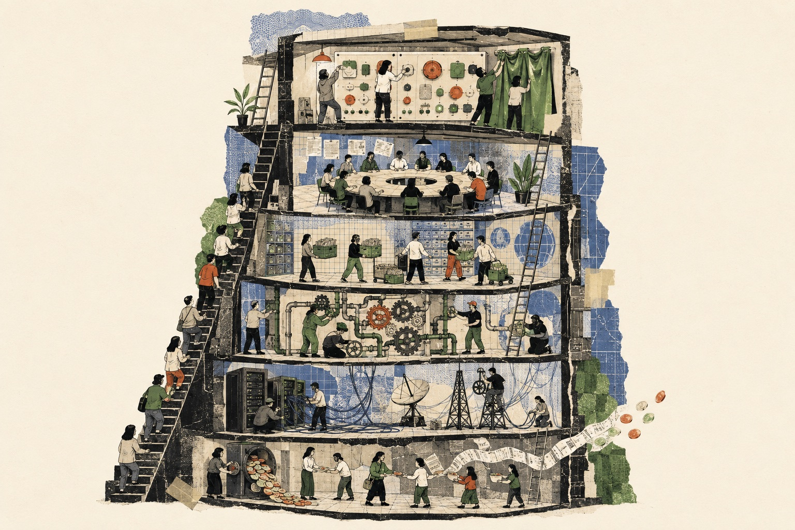
「停止為不存在的問題建構 Web3 解決方案。」
《困在社群平台》，第 118 頁
洛文克在書末提出 Stacktivism。與其等待一個取代平台的完美
App，不如把整個技術堆疊都看成行動現場。
介面可以拒絕操弄，資料可以設計成可攜，協議可以互通，基礎設施可以分散，金流也能承認實際貢獻。每一層的改善都打開一點空間，層與層連起來才形成出口。
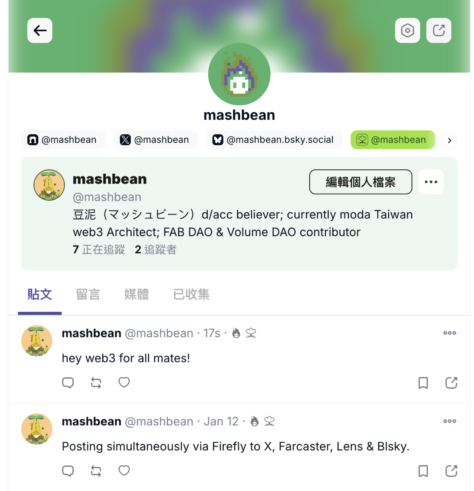
聯邦社交與身分遷移
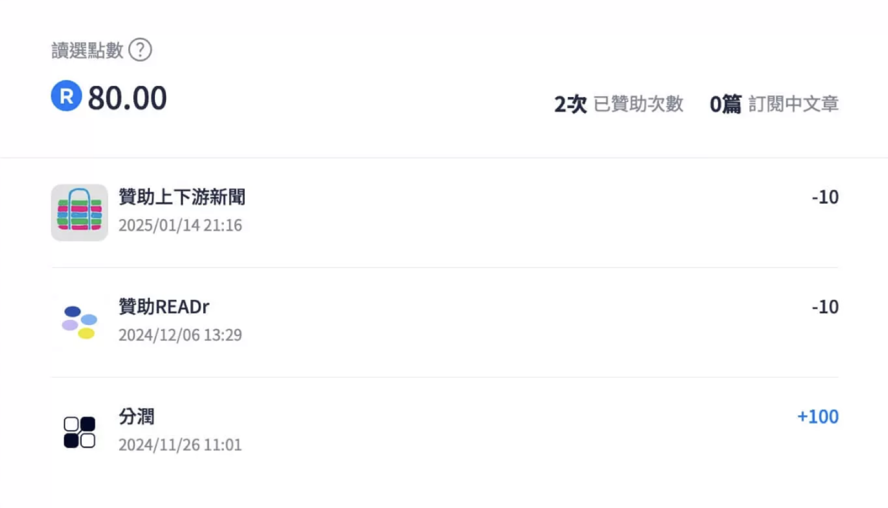
貢獻紀錄與社群分配
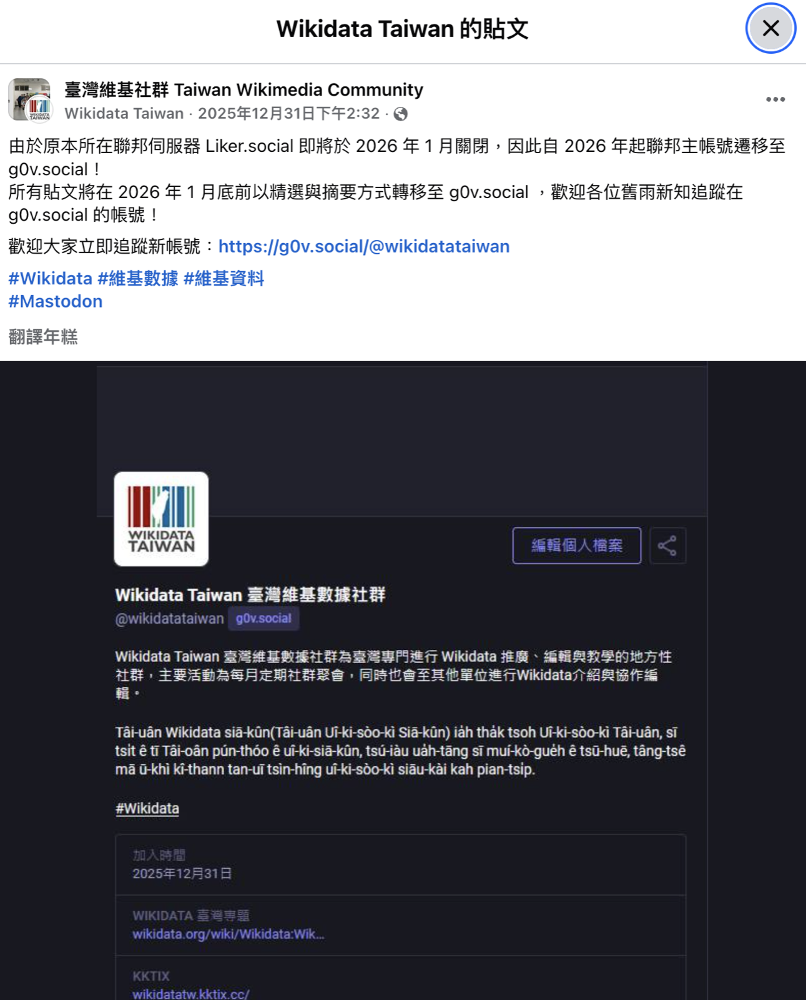
公共知識與共同維護
媒體營收與讀者關係
點一張照片，翻出它留下的維修單。
「唯有通過由下而上的自我實驗，變革才會到來。」
《困在社群平台》，第 79 頁
四個案例都留下成果與維修單。聯邦宇宙解開互通，還要營運節點；鏈上紀錄提高可驗證性，還要處理分配正當性；公共知識能共同維護，也需要長期編輯勞動。
實驗的價值在於把風險變成可觀察的問題，讓下一個社群不用從零開始。
「我們需要地圖，但要的是導航地圖。海事地圖。定位工具。」
《困在社群平台》，第 69 頁
這五題可以直接帶回自己的社群。勾選代表一次壓力測試的結果，下一次換情境還要再測。它用來發現單點依賴。
如果資料能帶走，人卻找不到彼此，仍然搬不成。規則很透明，卻沒有收入，空間也撐不久。出口是一組相互支援的條件。
選一把今天帶走的鑰匙
從捕蠅紙上
一起下來
協議、結社、治理、金流、抗審查。你最想先打開哪一把鎖？
黃豆泥 mashbean · 感謝參與密室逃脫演練
「該從捕蠅紙上面下來了。」黃豆泥
最後請大家選一把最想帶走的鑰匙。它會替下一個行動標出起點，另外四把則留在共同工具桌上。
從保存關係開始，把權力說清楚，把資源接起來。平台仍會存在，我們也能逐步找回搬家與共同建造的能力。